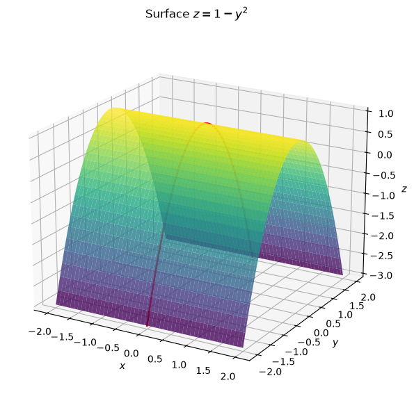
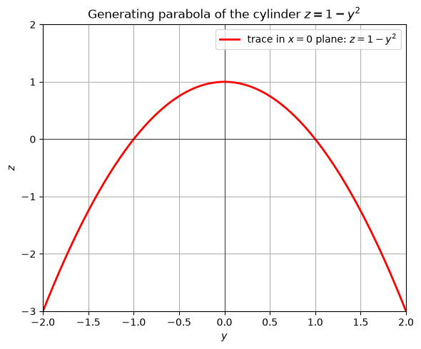
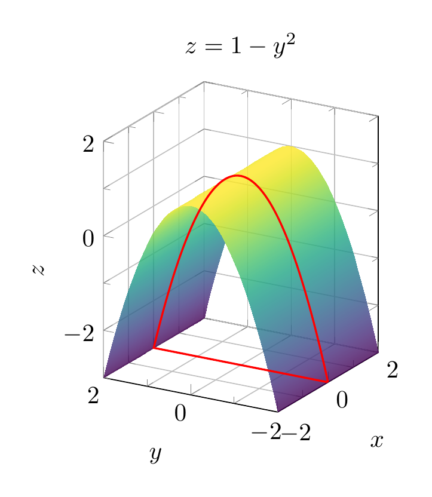
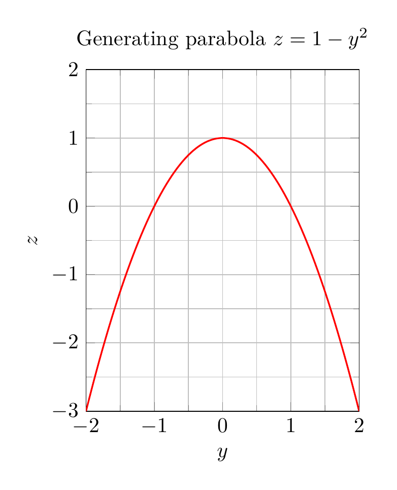

Path: mcma-Kimi-K2.7-Code/calculus-12.6.5/chat_20260825_023924_541998_utc_0800
Problem
Please solve the math problem in the image.

End of problem
Answer
# Solution: Describe and sketch $z = 1 - y^2$
## Analysis
The equation
$$
z = 1 - y^2
$$
involves the variables $y$ and $z$, but **not** $x$. In three-dimensional space, when one variable is missing from an equation, the surface is a **cylinder** whose rulings (generating lines) are parallel to the axis of the missing variable. Here $x$ is missing, so the rulings are parallel to the $x$-axis.
### Cross-sections (traces)
- **Plane $x = k$** (any constant $k$): the trace is the parabola
$$
z = 1 - y^2,
$$
opening downward in the $yz$-plane, with vertex at $(k, 0, 1)$.
- **Plane $y = k$**: the trace is the horizontal line
$$
z = 1 - k^2,
$$
parallel to the $x$-axis.
- **Plane $z = k$** (with $k \le 1$): the trace consists of the two lines
$$
y = \pm\sqrt{1-k},
$$
both parallel to the $x$-axis.
Since every slice perpendicular to the $x$-axis gives the same downward-opening parabola, the surface is a **parabolic cylinder**.
## Description
The surface $z = 1 - y^2$ is a **parabolic cylinder** generated by translating the parabola $z = 1 - y^2$ in the $yz$-plane along the $x$-axis. The parabola opens in the negative $z$-direction and has vertex $(0,0,1)$. The cylinder extends infinitely in both the positive and negative $x$-directions.
## Final Answer
$\boxed{\text{The surface } z = 1 - y^2 \text{ is a parabolic cylinder with rulings parallel to the } x\text{-axis, generated by the downward-opening parabola } z = 1 - y^2 \text{ in the } yz\text{-plane.}}$
---


\documentclass[border=10pt]{standalone}
\usepackage{pgfplots}
\pgfplotsset{compat=1.18}
\begin{document}
\begin{tikzpicture}
\begin{axis}[
xlabel={$x$}, ylabel={$y$}, zlabel={$z$},
title={$z = 1 - y^2$},
view={-60}{20},
colormap/viridis,
samples=50, samples y=50,
domain=-2:2, y domain=-2:2,
zmin=-3, zmax=2,
axis equal image,
grid=both,
minor tick num=1
]
\addplot3[surf, opacity=0.8, shader=interp] {1 - y^2};
\addplot3[red, thick, domain=-2:2, samples=100] (0, x, {1 - x^2});
\end{axis}
\end{tikzpicture}
\end{document}

\documentclass[border=10pt]{standalone}
\usepackage{pgfplots}
\pgfplotsset{compat=1.18}
\begin{document}
\begin{tikzpicture}
\begin{axis}[
xlabel={$y$}, ylabel={$z$},
title={Generating parabola $z=1-y^2$},
xmin=-2, xmax=2,
ymin=-3, ymax=2,
axis equal image,
grid=both,
minor tick num=1
]
\addplot[red, thick, domain=-2:2, samples=100] {1 - x^2};
\end{axis}
\end{tikzpicture}
\end{document}

End of answer